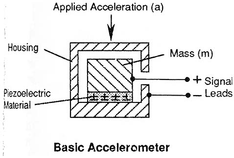
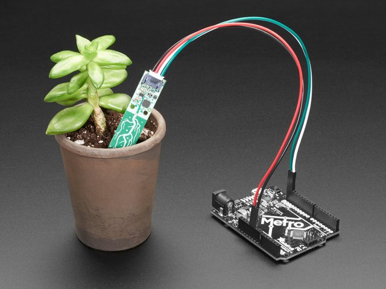
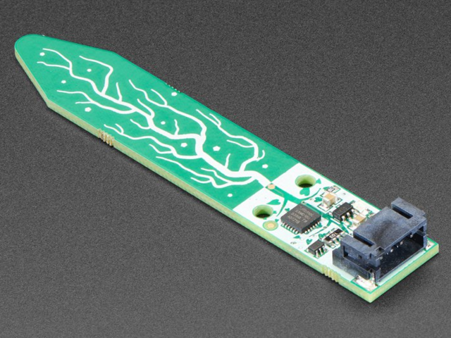

Progress Report for Mitchell Ciupak
Week 1:
Date: 4 September 2020Total hours: 4
Description of design efforts:
- The main contribution my team members and I worked on this week was setting up our project site. This week we all used the template to create our current site, but I set up webhooks into our repository to automatically push the site to the shay server via SFTP.
- I spent time diagraming the design of the software.
Week 2:
Date: 11 September 2020Total hours: 6
Description of design efforts:
- In an effort to finalize compoenent choices, I spent time shopping on various electronic suppliers as well as researching more about my main area of focus: Inertial Measurement Units. I spent time researching how accelerometers, gyroscopes, and magnetometers work in modern circuits.
Figure [1]
- As Systems Engineer, I spent time reading about software design in microcontrollers via online resources.
- I created a testable work environemnt or playground with an STM32 to test code for next weeks "Show me a thing".
Week 3:
Date: 18 September 2020Total hours: 4
Description of design efforts:
This week my contributions to the team consisted of only a few things. In an effort to finalize our Bill of Materials, I researched the use of STEMMA QT connectors and it's effectiveness in our project. I researched battery chemistries and discharge curves with respect to a temperature range appropriate to fulfill our first PSSC (An ability to operate for 5 hours at 0 degrees Fahrenheit). Lastly, Kennedy, our team leader, took the initiative on this week's Show Me A Thing. However, in an effort to help debug with her, I discovered an STM32 Library that I believe will assist in the development of our project. Looking ahead, I plan to take the lead on next week's Show Me A Thing, order parts and begin familiarizing myself with our micro's documentation and
- STEMMA QT connectors are a combination of JST PH connectors used to connect additional peripherals to through pin connections or back to a STEMMA QT port. I believe the use of these connectors will help with 2 things. The convenience of connecting a component like the IMU. These connections will also help protect against power management mentioned in lectures. Images of these connectors can be seen below.
Figure [2]Figure [3]
- While getting set up with a STM32F0, I stumbled across a resource called Hackster.io [4]. This site has a lot of reference material to use for STM32 based microcontrollers. Additionally, all of the tutorials include a library called stm32f0xx_hal [5]. This library holds many starter functions to make development on the STM32L4 easier.
Week 4:
Date: 25 September 2020Total hours: 2
Description of design efforts:
This week my contributions to the team outside of regular coursework and schedualed meetings only consisted of one thing. I studied Real Time Operating Systems (RTOS) and analyzed their potential application to our project.
- I researched the popular kernels mentioned in this week's lectures, ChibiOS[6], FreeRTOS[7], SafeRTOS[8], and Integrity[9]. The factors that I looked for in improving our system was the ability to improve our projects testing and event handling. After considering all these options, I as well as my teammates decided that we will be going in an Interrupt/Event Diven Approach due to its performance and power benefits.
Week 5:
Date: 2 October 2020Total hours: 6
Description of design efforts:
This week my contributions to the team outside of regular coursework and schedualed meetings consisted of working our LoRa Radio chip set and familiarizing myself with KiCAD.
- I worked with Carrie to produce this weeks Show me a thing. We worked with two HelTec ESP 32 LoRa Radios [10] and the HelTec library [11] to communicate strings back and fort. The project can be seen by vising or media link or below
- While working on Show Me A Thing, we interfaced with the chip via Arduino, but futher down the line we will use a LoRa specific library called LoraWan [12]. This library was discovered and analyzed this week.
- As part of this weeks assignments we were tasked with creating a draft schematic and while we each imported components, I took some time to learn the software we are using, KiCAD[13], deeper so that I can provide help when needed. This training took up the bulk majority of time time this week outside of meetings and assignments.
Week 6:
Date: 9 October 2020Total hours: 14
Description of design efforts:
This week my contributions to the team outside of regular coursework and schedualed meetings consisted of finalizing the Schematic and preparing the PCB.
- This week all team members worked togther to re-draft the schematic and finalize discrete componenets.
- Using KiCAD[13] I spent the majority of my time preparing a PCB to display at this weeks TA meeting. This weekend I will continue desiging and regining the PCB in preperation for our design review.
Week 8:
Date: 21 October 2020Total hours: 12
Description of design efforts:
This week my contributions to the team outside of regular coursework and schedualed meetings consisted of finalizing the PCB and preparing next week's Show Me A Thing.
- Next weeks Show Me A Thing will be a display of the IMU funcionality paired with the STM32. I have basic communication set up between our IMU and our Micro's dev kit. I will be looking to add display information before next Thursday.
- Continuing to shape and mold our PCB with KiCAD[13] has been a challenge. After numberous hours and helpful pointers from course staff, online, and from the PCB checklist I belive our PCB is ready to submit for fabrication. Also, I confirmed the gerber file posted here using gerbv[13].
Week 9:
Date: 30 October 2020Total hours: 6
Description of design efforts:
This week my contributions to the team outside of regular coursework and schedualed meetings consisted of finishing the final iteration and check of the PCB design and fabricaiton files.
- In finializing the PCB design I checked all pins, traces, vias, and mouning holes. I took measurements and adjusted components accoridingly for a 1:1 scale to the components we plan to mount there.
- I also manually inspected our PCB's gerber files on KiCAD[13] and had a third party service validate the PCB.
- I finally put in the order this week to fabircate our board! I decided to order from OSH Park[14] and our board has been sent to fab and is on a faster track to delivery than we initially anticipated. Here are some final renders of our baord


Week 10:
Date: 6 November 2020Total hours: 8
Description of design efforts:
This week my contributions to the team outside of regular coursework and scheduled meetings consisted of beginning work on the PCB we had delivered this week and building out the library and functionality for the BNO055, our IMU featured in this week's Show Me A Thing.
- After having the PCB delivered late this week, I have inspected and we have begun preparation to start adding components to our PCB.
- I also completed unit tests on the functionality with the BNO055[15] and STM32L4[16].
- Finally, this week, I have been building out the library of the BNO055[15] and preparing it to be used for the final project.


Week 11:
Date: 13 November 2020Total hours: 6
Description of design efforts:
This week my contributions to the team outside of regular coursework and scheduled meetings consisted of integrating the TOLED into my IMU project and properly calculating velocity using the IMU. As a team, we also got together and started soldering the PCB and testing.
- Here is a picture of the IMU wired up with the OLED displaying velocity and acceleration information.

Week 12:
Date: 20 November 2020Total hours: 12
Description of design efforts:
This week my contributions to the team outside of regular coursework and scheduled meetings consisted of buiding out an additional feature of the IMU, making it's velocity calculations more accurate, working to add parts to the PCB, and assisting other teammates.
- This week the team though adding a compass pointing in a cardinal direction would be a worthwhile add, so I worked on configuring that.
- Earlier this week, I was able to calculate velocity with the IMU, but it is not ass accurate as I'd hoped so I am doing some work to make it less varient.
- PCB construction has also been a central focus for Kennedy and I. I committed a significant amount of time doing that as well. Here is our progress so far on our second board and our soldering station:
Sources Cited:
[1] Industrial Electronics.com. 2020. Industrial Electronics. [online] Available at: <https://www.industrial-electronics.com/DAQ/industrial_electronics/input_devices_sensors_transducers_transmitters_measurement/Accelerometers.html> [Accessed 11 September 2020].
[2] Adafruit.com. 2020. Adafruit Industires. [online] Available at: <https://learn.adafruit.com/introducing-adafruit-stemma-qt> [Accessed 18 September 2020].
[3] Adafruit.com. 2020. Adafruit Industires. [online] Available at: <https://learn.adafruit.com/introducing-adafruit-stemma-qt> [Accessed 18 September 2020].
[4] Hackster.io 2020. Hackster Inc. [online] Available at: <https://www.hackster.io/> [Accessed 18 September 2020].
[5] ST.com. 2020. STMicroelectronics. [online] Available at: <https://www.st.com/resource/en/user_manual/dm00122015-description-of-stm32f0-hal-and-lowlayer-drivers-stmicroelectronics.pdf> [Accessed 18 September 2020].
[6] chibios.org. 2020. ChibiOS. [online] Available at: <https://www.chibios.org/dokuwiki/doku.php> [Accessed 25 September 2020].
[7] freertos.org. 2020. FreeRTOS Inc. [online] Available at: <https://www.freertos.org/> [Accessed 25 September 2020].
[8] highintegritysystems.com. 2020. WITTENSTEIN aerospace and simulation Ltd. [online] Available at: <https://www.highintegritysystems.com/safertos/> [Accessed 25 September 2020].
[9] ghs.com. 2020. Green Hills Software . [online] Available at: <https://ghs.com/products/safety_critical/integrity_178_tump.html> [Accessed 25 September 2020].
[10] amazon.com. 2020. Amazon Inc. [online] Available at: <https://www.amazon.com/MakerFocus-Development-Bluetooth-0-96inch-Display/dp/B076MSLFC9> [Accessed 2 October 2020].
[11] github.com. 2020. HelTec Inc. [online] Available at: <https://github.com/HelTecAutomation/Heltec_ESP32> [Accessed 2 October 2020].
[12] github.com. 2020. LoraWan TM [online] Available at: <https://github.com/mcci-catena/arduino-lorawan> [Accessed 2 October 2020].
[12] kicad-pcb.og. 2020. KiCad Inc. [online] Available at: <https://kicad-pcb.org/> [Accessed 2 October 2020].
[13] gerbv. 2020. SourceForge Inc. [online] Available at: <http://gerbv.sourceforge.net/> [Accessed 23 October 2020].
[14] OSH Park. 2020. Oshpark LLC. [online] Available at: <https://oshpark.com/> [Accessed 30 October 2020].
[15] Adafruit.com. 2020. Adafruit Industries. [online] Available at: <https://www.adafruit.com/product/2472> [Accessed 6 November 2020].
[16] ST.com. 2020. STMMicroelectronics. [online] Available at: <https://www.st.com/en/microcontrollers-microprocessors/stm32l4-series.html> [Accessed 6 November 2020].